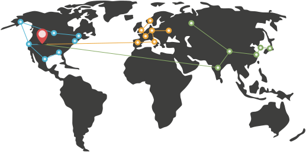

I love algorithms.
Well crafted code is a beautiful thing.
stringmetric Scala Project
String metrics and phonetic algorithms for Scala (e.g. Dice, Hamming, Jaccard, Jaro-Winkler, Levenshtein, Metaphone, Monge-Elkan, N-Gram, Needleman-Wunch, NYSIIS, Ratcliff-Obershelp, Refined NYSIIS, Refined Soundex, Soundex, Weighted Levenshtein).
Released via the Apache License v2.0.
prefixmap Scala Gist
I love software stacks.
Solid stacks keep you focused on development and producing.
Scala and Clojure are my go-to languages for machine learning, numerical computing and analysis, natural language processing, mapreduce, general backend, web apps, you name it.
Tools of the trade for polyglot persistence are Postgres, MongoDB, Titan, Neo4j, HBase, and Redis. Each storage system type lends itself to certain problems better than others, which leads to a mix being used on any sizable project.
Tapping into open source projects provides huge gains. Some of my favorites: Debian, FreeBSD, SmartOS, Nginx, Finagle, Kafka, Thrift, Netty, Akka, Scalatra, Git, and hundreds more on
GitHub.
I love hardware and ops.
Great hardware and operations are the foundation for stellar services.
Hand crafted x86 Supermicro servers, deep knowledge of datacenter operations, codebase performance analysis, and load distribution strategies can reduce operational costs over services like AWS by at least two-thirds.
Leveraging SmartOS, FreeBSD, and Debian it is possible to create private clouds that are reliable, scalable, and performant. Hardware and networking done well, coupled with automation, can take this even further.
Combine solid *nix administration knowledge, Ansible deployment and migration automation, and treating everything immutably can reduce admin hours per week to just a few. Even with multiple racks of servers.
Colorado grown code.
My home is Fort Collins, but I solve problems and work with organizations worldwide.
